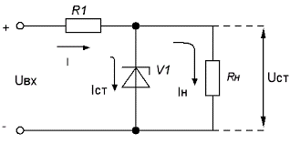
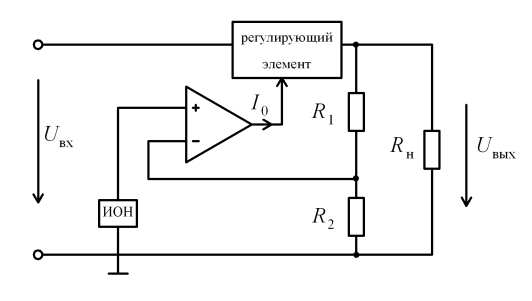

Стабилизатором напряжения (тока) называется устройство, поддерживающее автоматически
и с требуемой
точности напряжение (ток) на нагрузке при изменении дестабилизирующих факторов в
обусловленных
пределах.
Различают: 1. Стабилизаторы напряжения переменного и постоянного тока.
Существует два
метода стабилизации:
параметрический (ПС);
компенсационный (КС).
В параметрических стабилизаторах используется элементы с нелинейной зависимостью
между I и U
(транзисторы, стабилитроны, терморезисторы). Принцип действия ПС основан на
сопротивления входящих в
схему элементов, при приложенного к ним напряжения или проходящих
через них тока.
Сущность компенсационного метода стабилизации сводится к
автоматическому
регулированию выходного напряжения В них производится сравнение фактической
величины выходного
напряжения
с его заданной величиной и в зависимости от величины и знака рассогласования между
ними автоматически
осуществляется корректирующее воздействие на элементы стабилизатора, направленное на
уменьшение этого
рассогласования.
Параметры стабилитронов.
Коэффициент стабилизации – это отношение относительного увеличения
напряжения (тока) на входе к
относительному увеличению напряжения (тока) на выходе стабилизатора (при
постоянном сопротивлении
нагрузки).
Схема параметрического стабилизатора напряжения на кремниевом стабилитроне.
 Схема
представляет делитель напряжения, состоящий из резистора R0 и стабилитрона VD.
Нагрузочный резистор Rн
включен параллельно стабилитрону. Поэтому
в режиме стабилизации, когда напряжение стабилитрона почти постоянно, постоянным
будет и напряжение на
нагрузке.
Достоинства рассмотренной схемы – простота конструкции и надежность.
Параметрические
стабилизаторы используют для нагрузок от нескольких единиц до десятков миллиампер.
Они не боятся
коротких замыканий нагрузки. Недостатки
– невысокий КПД (не более 50 %), узкий диапазон регулируемого напряжения. Если
необходима повышенная
стабильность выходного напряжения, параметрические стабилизаторы включают каскадно
или используют
мостовые схемы.
Компенсационные стабилизаторы напряжения.
Структурная схема компенсационного стабилизатора показана на рисунке.
 Регулирующий
элемент включен
последовательно с сопротивлением нагрузки. Дифференциальный усилитель
является усилителем
сигнала ошибки. Этот сигнал равен разности между опорным напряжением Uоп ,
формируемым на выходе
источника опорного напряжения (ИОН), и напряжением делителя R1 – R2 . Принцип
действия
компенсационного стабилизатора состоит в том, что
на входе формируется постоянное напряжение, минимальное значение которого должно
превышать требуемый
уровень стабилизированного напряжения на выходе. При изменении входного напряжения
или тока нагрузки
выходное напряжение стабилизатора
поддерживается постоянным за счет изменения падения напряжения на регулирующем
элементе.